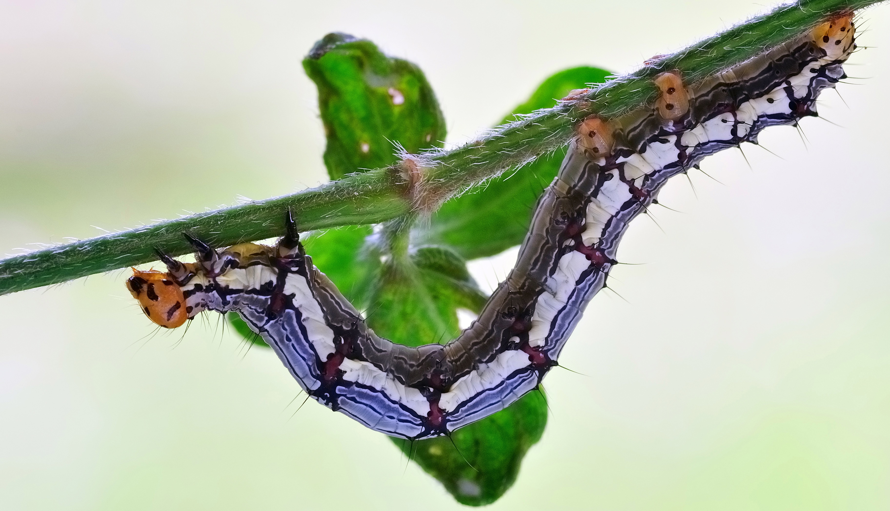
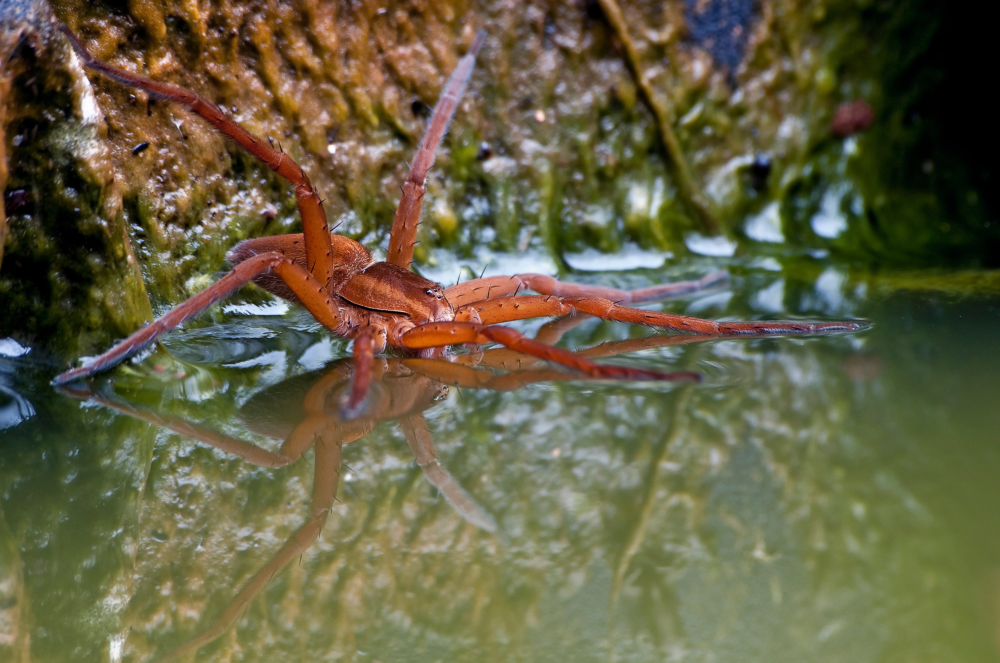
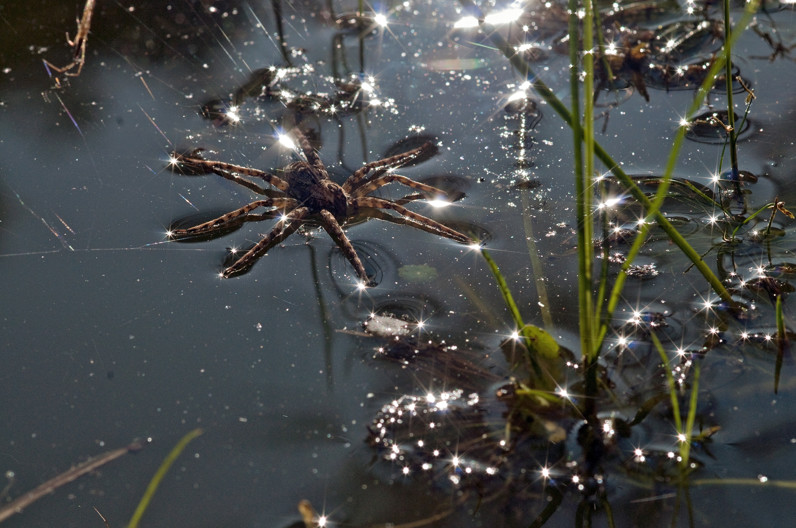
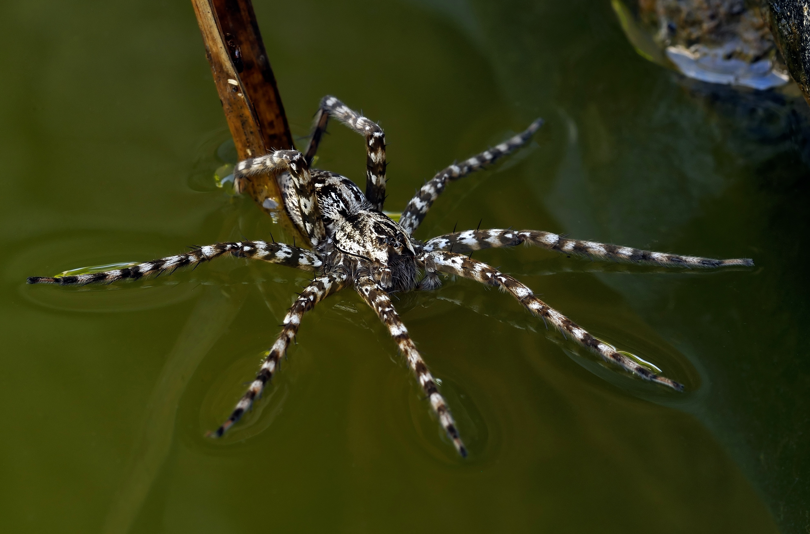

← Back to home
Photography · Macro
The world in miniature
Macro photographs from gardens, meadows and woods – each with its own small story.
Photo gallery
Scorpionfly
 Scorpionfly · male
Scorpionfly · maleButterflies
 Cabbage white (probably)
Cabbage white (probably)Caterpillars
South Africa · 2010

Common Diadem · caterpillarInsects
 Water striders mating
Water striders mating Snipe fly
Snipe flyDamselflies
 Freshly emerged damselfly
Freshly emerged damselfly Damselfly
Damselfly Azure bluet (probably)
Azure bluet (probably)Spiders
 Lynx spider · South Africa
Lynx spider · South Africa Golden orb-web spider · South Africa
Golden orb-web spider · South Africa Hidden in plain sight
Hidden in plain sight Camouflaged on bark
Camouflaged on bark A broken twig?
A broken twig?Fishing spiders
Garden pond behind the house · South Africa · 2010

Fishing spider at the pond's edge
Carried by the water
Hunter on the waterBirds
 European robin
European robinFlowers
 False sunflower (probably)
False sunflower (probably) Dandelion clock
Dandelion clockMore themes
Reptiles & amphibians · Plants & details · Other discoveries Photos to follow